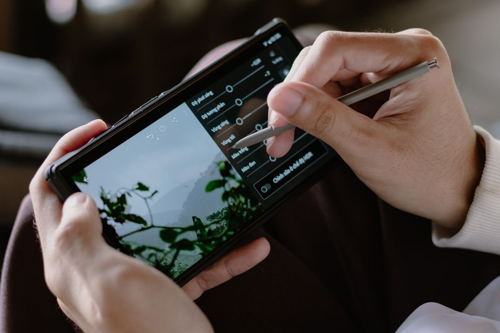
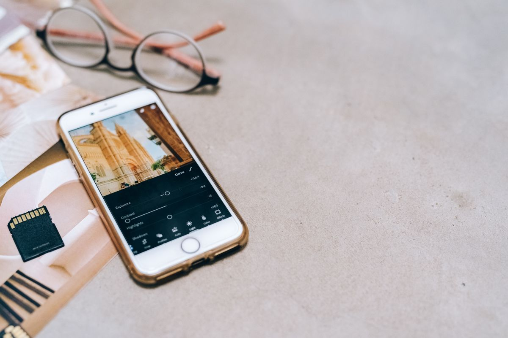

Ya, kamu bisa pakai Lightroom di HP tanpa langganan. Per November 2026, Adobe menyediakan Lightroom Mobile sebagai aplikasi gratis di iPhone dan Android, lengkap dengan preset dan alat edit dasar. Kamu hanya perlu akun Adobe gratis untuk mulai mengedit. Versi berbayarnya, Lightroom Premium, hanya membuka alat lanjutan seperti Masking dan Generative Remove.
Jawaban singkatnya begini. Lightroom Mobile gratis untuk menangkap, mengatur, dan membagikan foto, plus sebagian besar alat edit dasar. Kamu bisa mengatur pencahayaan, warna, dan detail, memakai preset bawaan, memotong dan meluruskan foto, lalu mengekspor hasilnya ke galeri HP. Adobe sendiri menulis di halaman FAQ resminya bahwa versi gratis Lightroom Mobile memberi akses ke preset dan alat edit dasar. Yang tidak gratis adalah alat yang mengedit sebagian foto saja, seperti Masking dan Generative Remove, plus Lens Blur, Adaptive Presets, dan sinkronisasi cloud penuh ke desktop. Jadi, kalau kebutuhanmu hanya memperbaiki foto liburan, foto jualan, atau foto untuk media sosial, versi gratisnya sudah cukup.
Apa saja yang gratis di Lightroom Mobile?
Bagian gratisnya justru bagian yang paling sering kamu pakai. Menurut panduan Adobe, aplikasi ini memberi alat edit inti, preset, dan fitur organisasi foto tanpa langganan. Kamu bisa menggeser exposure, kontras, highlight, dan shadow, lalu mengatur suhu warna dan vibrance sampai tone foto terasa pas. Ada juga kurva nada (tone curve) untuk mengatur terang gelap dengan lebih halus, serta kontrol HSL yang memisahkan hue, saturation, dan luminance tiap warna. Jadi, kalau langit di fotomu terlalu pucat sementara daunnya sudah hijau, kamu bisa menaikkan birunya saja tanpa mengubah warna lain.
Preset bawaan juga termasuk gratis. Satu ketukan bisa mengubah tone foto jadi hangat, dingin, atau moody, dan kamu bisa menyimpan racikanmu sendiri sebagai preset supaya foto berikutnya konsisten. Kamu juga bisa membuat preset sendiri dari nol, seperti yang dijelaskan panduan berbahasa Indonesia, dan fitur itu tersedia di versi gratis. Selain mengedit, kamu bisa memotret langsung dari kamera di dalam aplikasi, mengatur foto ke dalam album, dan mengekspor hasil edit ke galeri. Semua edit bersifat non-destruktif, jadi foto aslinya tetap tersimpan dan kamu bisa membatalkan perubahan kapan saja.

Apa saja yang dikunci Premium?
Premium adalah tempat Adobe menaruh alat yang mengedit sebagian foto, bukan seluruh foto. Masking bisa memilih langit, subjek, atau latar secara otomatis, lalu kamu mengedit bagian itu saja. Generative Remove menghapus orang atau benda pengganggu dan mengisi area itu dengan isi yang menyerupai latar. Lens Blur menambah blur latar sesudah foto diambil, dan Adaptive Presets menyesuaikan preset dengan subjek foto. Healing Brush, edit batch untuk banyak foto sekaligus, dan alat geometri untuk meluruskan perspektif juga masuk Premium.
Sinkronisasi cloud penuh juga berbayar. Tanpa langganan, fotomu tersimpan di HP dan tidak tersinkron otomatis ke Lightroom desktop atau web. Edit file RAW yang diimpor dari kamera juga tercantum sebagai fitur Premium di FAQ Adobe, jadi kalau kamu memotret RAW dengan kamera mirrorless, versi gratis bukan jalurnya. Satu hal yang perlu kamu ingat: harga Premium bisa berbeda-beda dan berubah sewaktu-waktu, jadi cek harga yang tampil di App Store atau Google Play di HP kamu, jangan mengandalkan harga dolar dari artikel luar.
Bagaimana cara pakai Lightroom gratis di HP?
Caranya singkat, dan kamu tidak perlu kartu pembayaran untuk versi gratisnya. Ikuti langkah ini.
- Unduh Adobe Lightroom dari App Store atau Google Play. Pastikan pengembangnya Adobe Inc., bukan aplikasi peniru dengan nama mirip.
- Buka aplikasinya, lalu buat akun Adobe gratis atau masuk dengan akun yang sudah kamu punya. Adobe meminta akun ini saat pertama kali aplikasi dibuka.
- Izinkan akses ke foto saat diminta, lalu ketuk ikon tambah untuk mengimpor satu foto dari galeri.
- Coba preset bawaan dulu. Ketuk menu Preset, pilih satu gaya, lalu kecilkan kekuatannya bila efeknya terasa berlebihan.
- Haluskan dengan menu Light dan Color. Naikkan exposure sedikit bila foto gelap, turunkan highlight bila langit putih, lalu atur vibrance dan saturation sampai warnanya hidup tapi tidak norak.
- Ketuk ikon bagikan untuk mengekspor foto ke galeri. Pilih kualitas tertinggi yang tersedia supaya hasil edit tidak pecah saat diunggah.
Bila kamu mengetuk sebuah alat lalu muncul tawaran Premium, itu tandanya alat itu berbayar. Tutup tawaran itu dan lanjutkan dengan alat gratis. Jangan mengunduh file APK modifikasi yang mengklaim membuka Premium gratis, karena file itu melanggar aturan Adobe.

Kapan kamu perlu bayar, dan kapan tidak?
Jawabannya tergantung seberapa jauh kamu mengedit. Tetap gratis bila kamu mengedit foto HP untuk media sosial, toko online, atau kenangan liburan, karena alat dasar dan preset sudah menutup kebutuhan itu. Tetap gratis juga bila kamu hanya butuh satu gaya konsisten lewat preset buatan sendiri.
Pertimbangkan Premium bila kamu mengedit foto klien, memotret RAW dari kamera, atau butuh hasil edit yang sama di HP dan laptop. Adobe juga memberi uji coba gratis 7 hari untuk paket Lightroom penuh, menurut beberapa panduan yang merujuk halaman trial Adobe, jadi kamu bisa mencoba fitur Premium sebelum membayar. Ingat, uji coba itu berubah jadi langganan berbayar bila tidak dibatalkan sebelum waktunya habis, jadi pasang pengingat di HP kamu bila mencobanya.
Intinya, Lightroom di HP memang gratis untuk edit foto sehari-hari, dan label Premium di aplikasinya bukan berarti seluruh aplikasi berbayar. Mulai dari versi gratisnya dulu, kuasai preset dan kontrol warnanya, dan baru pikirkan langganan bila alat Premium benar-benar kamu butuhkan.
Baca juga: kalau mau mengedit di laptop tanpa langganan, baca Photoshop asli yang bisa dipakai gratis. Kalau butuh editor foto yang jalan di browser, ada alternatif gratis Photoshop yang tidak perlu install. Daftar lengkap artikel Other ada di halaman Other, dan artikel riset lain ada di blog.
Sumber dan Info Resmi
Fakta dan angka di artikel ini merujuk ke sumber berikut:
- Adobe: FAQ Lightroom Mobile: versi gratis Lightroom Mobile memberi akses ke preset dan alat edit dasar; upgrade ke Premium membuka Generative Remove, Lens Blur, dan Adaptive Presets; tersedia di iOS dan Android.
- Adobe Help: Unduh dan instal Lightroom Mobile: Lightroom di iOS adalah aplikasi gratis dengan alat edit inti, preset, dan fitur organisasi; akun Adobe gratis dibuat saat pertama membuka aplikasi; upgrade membuka Masking, Lens Blur, Generative Remove, dan penyimpanan cloud lintas perangkat.
- Adobe Help: Upgrade ke langganan berbayar: Lightroom gratis diunduh dan dipakai dengan kemampuan edit inti; langganan Premium yang dibeli lewat App Store hanya mengaktifkan fitur Premium di HP.
- Lilach Bullock: Is Lightroom Free (diperbarui 10 November 2026): Lightroom Mobile gratis untuk iPhone, iPad, dan Android; tersedia uji coba gratis 7 hari untuk paket penuh.
- Bitezine: Lightroom Mobile Review (diperbarui 20 Oktober 2026): versi gratis mencakup exposure, kontras, highlight, shadow, tone curve, kontrol HSL, color grading, dan preset bawaan; edit bersifat non-destruktif; Premium membuka Masking, Generative Remove, dan Lens Blur.
- Macstore Digital: Cara Membuat Preset Lightroom Sendiri: membuat preset sendiri di Lightroom Mobile tersedia di versi gratis; Premium membuka masking pintar, healing, dan sinkronisasi cloud.
- Shotkit: Is Lightroom Free (diperbarui 6 Oktober 2026): dua cara resmi memakai Lightroom gratis, yaitu mode gratis aplikasi mobile dan uji coba 7 hari; daftar fitur Premium mencakup healing brush, selective adjustments, geometry, edit RAW di HP, dan batch editing.
- Techziano: Lightroom Mobile Free vs Premium: menurut FAQ Adobe, edit RAW, masking, healing, alat geometri, dan batch editing tercantum sebagai fitur Premium.